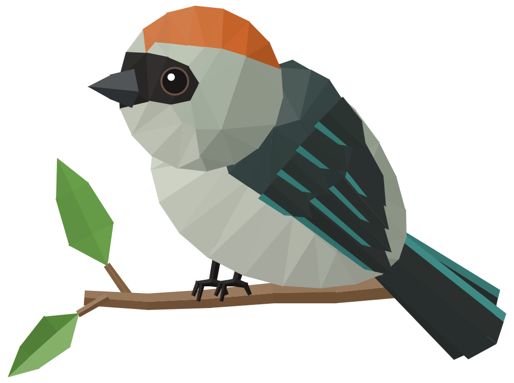
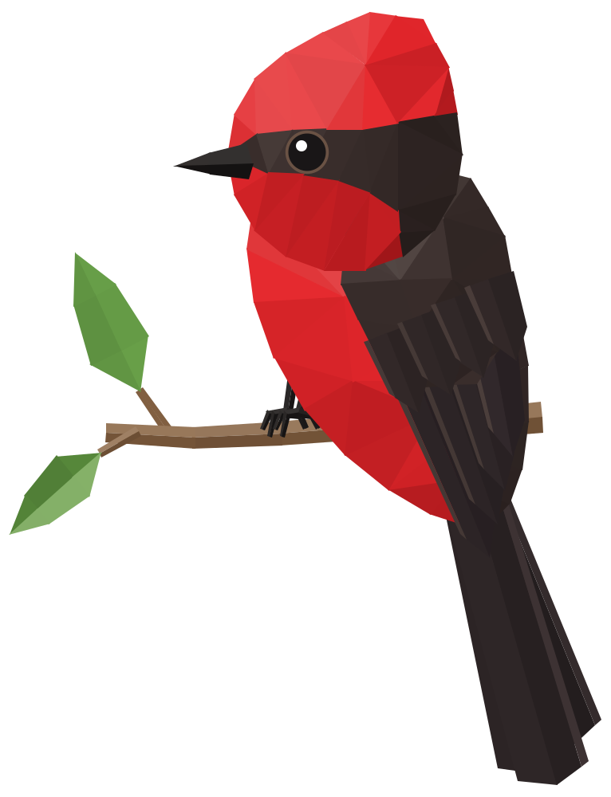
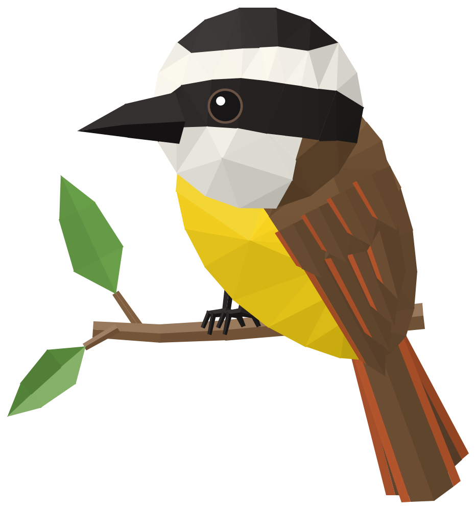
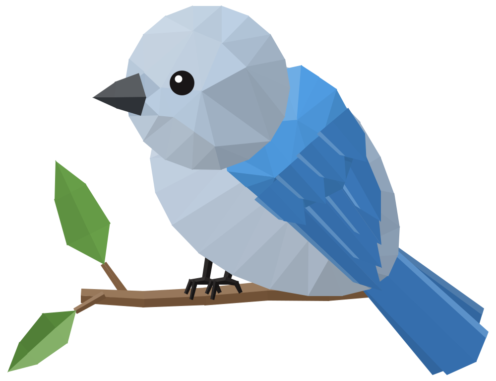
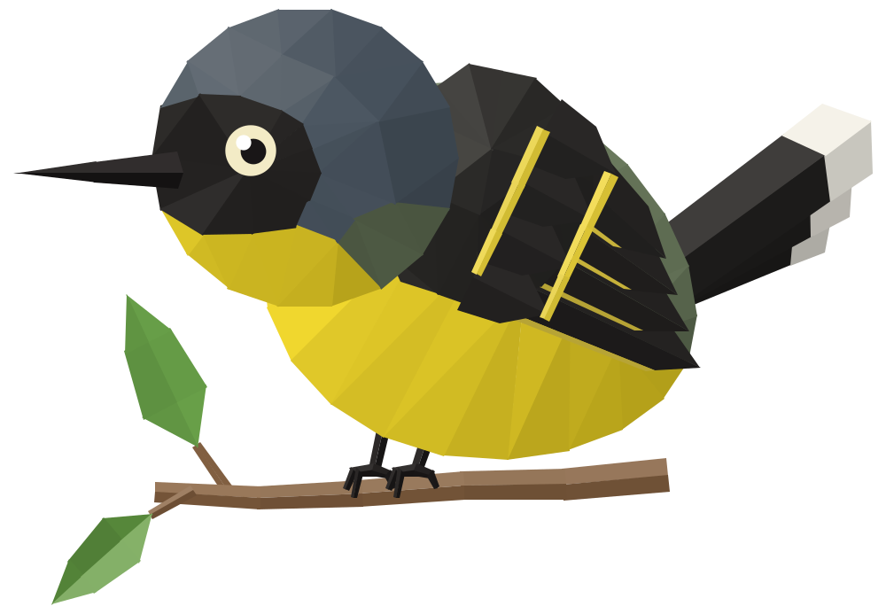

Aves de la sucursal del cielo
Las cinco aves
Escanea y conoce las cinco aves
https://roypitw3.github.io/aves-sucursal-del-cielo/
Las cinco aves
Escanea y conoce las cinco aves
https://roypitw3.github.io/aves-sucursal-del-cielo/

Stilpnia vitriolina
Escanea y escucha su canto
https://roypitw3.github.io/aves-sucursal-del-cielo/#/tangara-rastrojera

Pyrocephalus rubinus
Escanea y escucha su canto
https://roypitw3.github.io/aves-sucursal-del-cielo/#/pechirrojo

Pitangus sulphuratus
Escanea y escucha su canto
https://roypitw3.github.io/aves-sucursal-del-cielo/#/bichofue

Thraupis episcopus
Escanea y escucha su canto
https://roypitw3.github.io/aves-sucursal-del-cielo/#/azulejo

Todirostrum cinereum
Escanea y escucha su canto
https://roypitw3.github.io/aves-sucursal-del-cielo/#/espatulilla